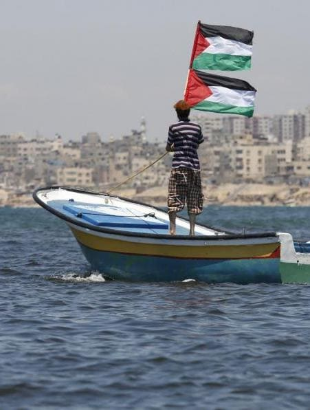

The Amazon River in Brazil has reached its lowest water levels ever recorded due to an unprecedented drought, posing a severe threat to both local communities and delicate jungle ecosystems. As tributaries dry up along the world's second-longest river, boats are stranded and essential supplies of food, water, and medical aid are cut off from remote villages. High water temperatures are also endangering marine life, suspected to have caused the deaths of over 100 endangered river dolphins, according to Reuters.
In Manaus, the largest city in the region, water levels have dropped to 13.59 meters, down from 17.60 meters last year, marking the lowest levels in over a century since records began in 1902. Parts of the Amazon region have experienced the lowest rainfall recorded between July and September since the 1980s, according to Brazil's disaster monitoring and response organization (Cemaden).
The drought has affected more than 480,000 people, leading to emergency supplies being transported by tractor, canoe, or on foot to affected areas.
Click Here to read the full story ↗
The conflict in Gaza has deeply impacted the region's marine life and coastal resources. Infrastructure damage often results in untreated sewage and pollutants entering coastal waters, endangering marine habitats, coral reefs, and fish populations. Genocide, occupation and colonization disrupts livelihoods, increasing reliance on marine resources and exacerbating overfishing, threatening fish stocks and disrupting marine ecosystems. IOF activities harm critical habitats like mangroves and seagrasses, essential for marine species breeding.
Beyond ecological damage, war restricts fishing access, worsening food security and livelihoods for coastal communities. Addressing these challenges requires immediate humanitarian aid, long-term environmental rehabilitation, sustainable resource management, and infrastructure rebuilding to support community recovery and protect Gaza's marine biodiversity.
Click Here to read the full story ↗

The article discusses a new study indicating that sewage discharge has a more detrimental impact on rivers compared to agricultural runoff. It highlights that sewage releases introduce significant amounts of nutrients and pathogens into water bodies, leading to reduced oxygen levels and harmful algal blooms. These pollutants can profoundly affect aquatic organisms, disrupting their habitats and potentially causing long-term damage to marine ecosystems. The study emphasizes the urgent need for improved sewage management to mitigate these environmental impacts effectively.
Click Here to read the full story ↗
The Tuscan coast of Italy is renowned for its octopus fishing using a method called the "pot" technique. This involves deploying black plastic pots on nylon cables up to 2 kilometers long, camouflaged on the muddy seabed as shelters where octopuses seek refuge and reproduce. Fishermen retrieve octopuses by hauling up the line and emptying pots when occupied. Despite regulations limiting each boat to 1250 pots and prohibiting year-round seabed gear, these rules are often ignored.
Illegal octopus pots worsen overfishing, disrupting the marine ecosystem and endangering species like the Mediterranean monk seal, heavily reliant on octopuses. Sea Shepherd's Operation Siso has seized a record 7,672 illegal pots from the Tuscan archipelago seabed in 2022, the largest Mediterranean seizure. This supports ongoing efforts to restore the monk seal population; recently, the International Union for Conservation of Nature reclassified the monk seal from "endangered" to "vulnerable," highlighting conservation progress.
Click Here to read the full story ↗